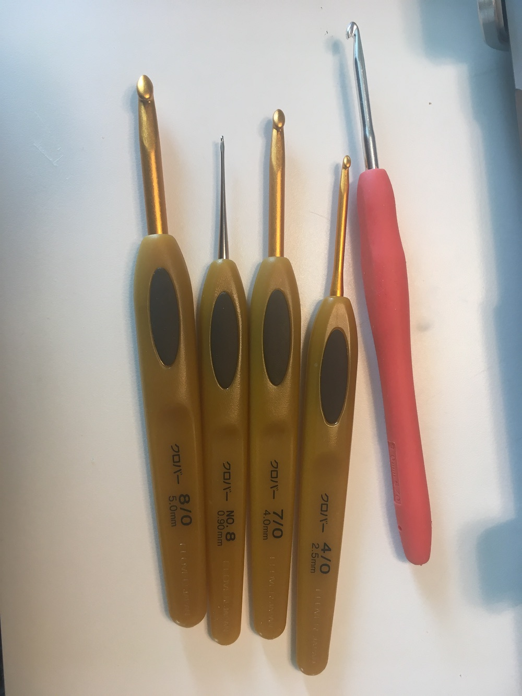
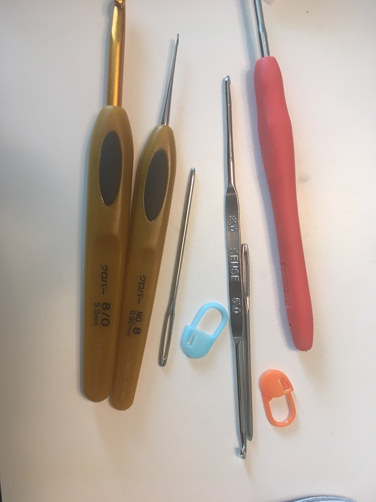
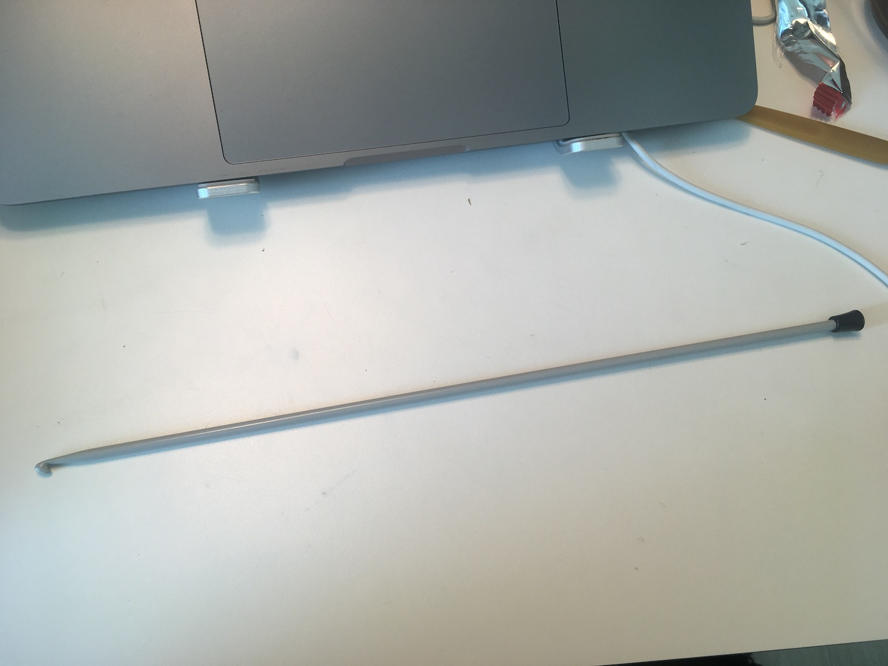
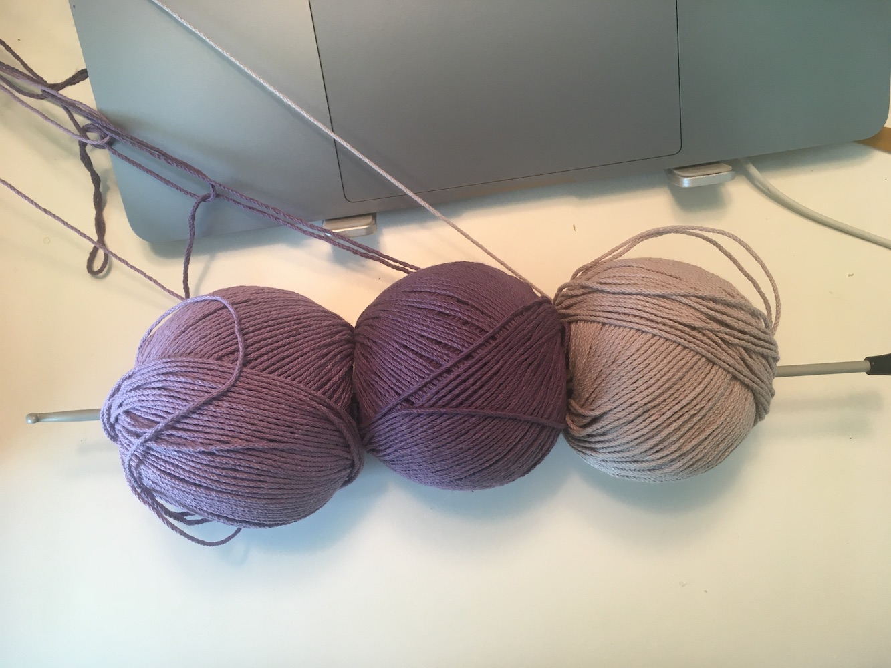
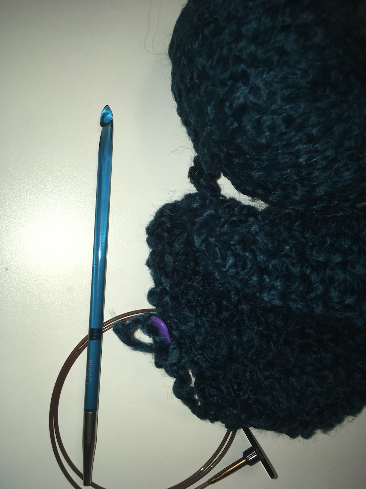
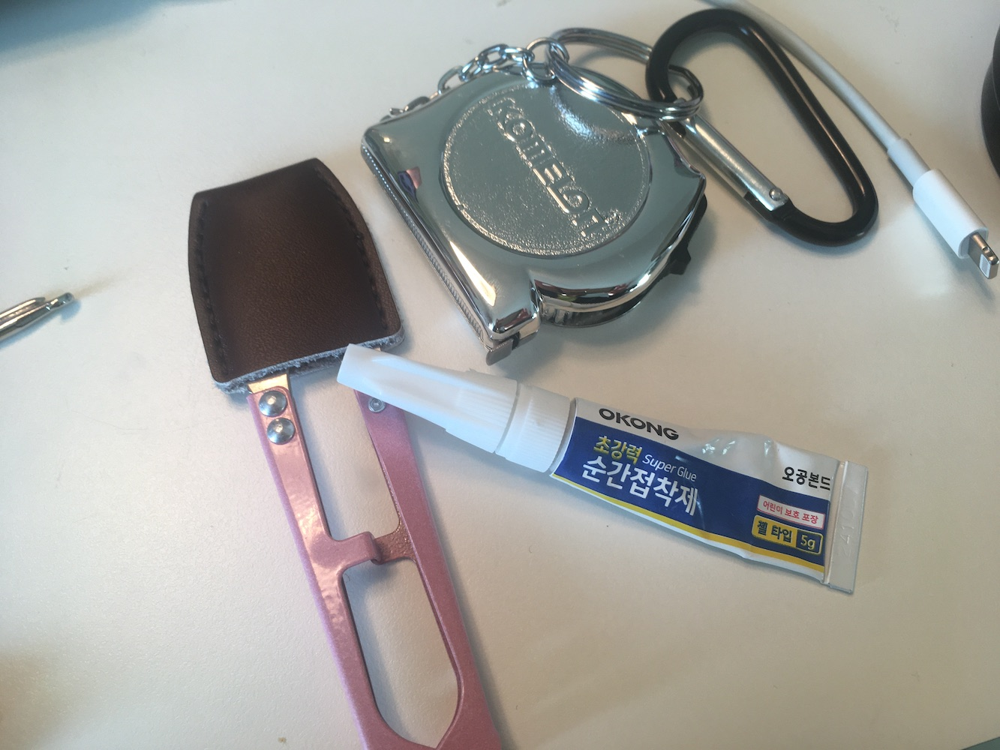

사실 맞긴 함
~현재까지 나의 뜨개 도구 컬렉션~
어떤 사람은 나무젓가락으로 대바늘을 시작했다던데.. 나는 이제 코바늘을 시작한지 4개월 정도 되었는데 이것저것 도구를 많이도 사버렸다. 내가 장비빨 세우는 사람이라니.. 지금 회사에 진짜 급하게 해야 하는 일이 있는데 너무 회피하고 싶어서 이거 쓰고 있다. 후덜덜.
생각해보니 코바늘에 약간 돌아버린 시점에 회사 근처 시장 뜨개방에서 1,000원이었나 하여간 엄청 저렴한, 양쪽에 호수가 다른 훅이 있는 스텐 코바늘을 2개 샀었는데 그 중에 레이스용 코바늘을 이상하게 금방 잃어버려서 막 마음이 너무 조급하고 당장 코바늘하고 싶어서 미치겠는 불안 상태가 되어서 쿠팡으로 크로바 바늘을 산게 화근이었다.
쿠팡 정말 이용 안하려고 하는데 무슨 엄청난 쿠폰을 뿌려서 거의 공짜로 크로바 펜-e 레이스용 코바늘을 샀었지…. 이것으로 나의 크로바펜e코바늘 집착이 시작되었다.
그 이후로 3호 코바늘이 필요했는데 시장에서 산 또다른 코바늘을 또 잃어버려서(얼마전에 근데 다시 찾음) 같은 모델로 4호를 구매했고, 야금야금 7호와 8호까지 갖게 되었다. 사실 6호를 산 줄 알았더니 한참 쓰고 보니 7호였더랬다. 보통 3호 5호 이렇게 홀수 호수를 많이 사는 것 같은데 좀 애매한 컬렉션이 되어가는 기분..
펜e코바늘이 왜 좋은지는 사실 잘 모르겠고 클래식한 생김새가 일단 마음에 든다. 뜰 때는 납작한 그립 형태가 손에 특히 엄지손가락 뼈 부분에 묘하게 무리가 가는 것 같기도 한데, 지금은 그냥 이 그립에 익숙해져서 불편하지는 않다.
지금 쓰고 있는 호수에서 당장 더 필요한 호수가 없는데도.. 자꾸만 2호를 살까, 3호를 살까, 이런 생각을 막연하게 계속 하고 있다. 2호를 사면 그에 맞는 실을 또 사겠지.
돗바늘은 대충 다이소에서 산 거. 할말없음. 단수링은 뜨개모임하면서 받은 거. 옷핀 형태가 나는 귀찮아서 잘 안쓰게 되던데 이것보다 더 편한 형태가 있는지 모르겠다.
 그리고 아후강바늘도 얼마 전에 샀었고. 꼬치의 달인도 가능할 듯. 이 바늘 산 이후로 하나 더 삼. 왜 샀냐면..
아크릴 코바늘 이 색깔이 너무 마음에 들어서 그냥 사고 싶었다. 당장 5.5mm 코바늘 뜰 것도 없는데…. 그래서 만들 것도 그냥 만들어버림. 엄마 모자 뜰려고, 실이랑 바늘 산 것으로 합의 봤다. 겨울은 다 지나가지만.. 어쩔 수 없다. 그리고 이 코바늘은 원래 그냥 긴 보통의 아후강바늘처럼 생긴 게 있는데 이렇게 짧은 형태로 뒤에 케이블을 꽂아 쓰는 형태도 있길래 이걸로 샀다. 당장 쓸 일도 없는데… 뭐 어때… 내 돈임…
그리고 따끈따끈한 구매 소식으로 진짜 유난스럽게 뜨개질을 위해 작은 줄자를 샀다. 와. 줄자 얼마나 쓰려고 줄자를 따로 삼…. 집에 줄자가 있는데 약간 크고 큰 물체용의 줄자여서 이걸 들고 다닐 수는 없지, 하면서 미니 줄자를 또 네이버에서 고르고 골라 샀다. 와 대박임. 받아보니 이게 정말 필요했던가 이런 생각이 들었지만 잘 쓰고 있다.
그리고 또.. 추가되겠지.. To be continued..